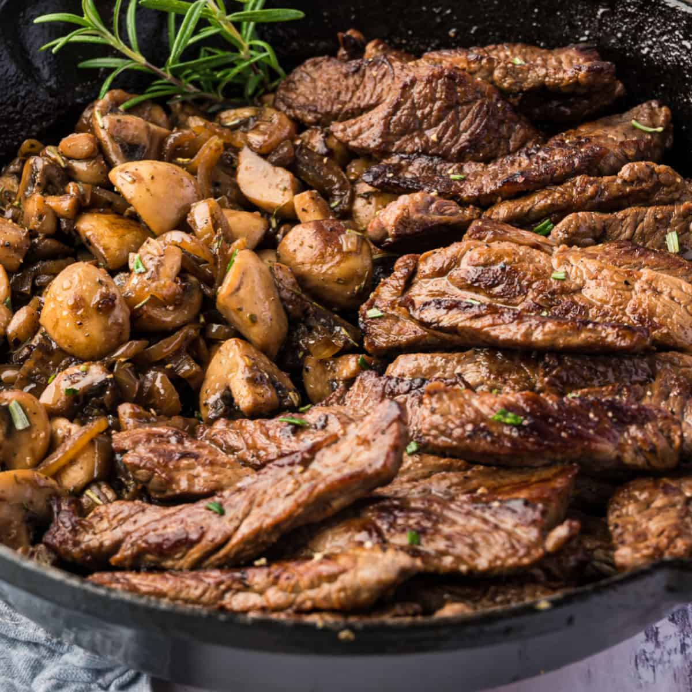

Steak and Mushrooms

Still hungry? Good! Next up in our series is Steak and Mushrooms!
Fair warning now, these mushrooms aren't ordinary. In fact, they may taste horrid at first,
but don't fret! These mushrooms will give you strength akin to an ancient deity!
Ingredients
- 1 tablespoon olive oil
- 1 tablespoon butter
- 6 ounce mushroomslices
- 3 garlic cloves minced
- 1 teaspoon thyme chopped
- 1 teaspoon rosemary chopped
- 1 teaspoon oregano chopped
- 2 lean New York Steak strip steaks
- Salt and Pepper
Garlic Butter Compound
- 1/4 cup softened butter
- 3 garlic cloves minced
- 1 teaspoon thyme chopped
- 1 teaspoon rosemary chopped
- 1 teaspoon oregano chopped
Steps
- In a large cast iron skillet over medium-high heat,
add olive oil and butter, mushrooms, garlic, thyme, rosemary, and
oregano. Cook for about 3 minutes or until tender.
Remove and set aside on a plate.
- Turn the skillet to high heat. Add the steaks. Cook on
each side for 3 minutes or until outside is browned. Reduce heat
to medium-high. Cook the steaks to the desired doneness. Mine took about 10 minutes
flipping 3 times to get a medium well.
- Right before the steaks are done, make the
garlic butter compound. Mix the butter, garlic and
fresh chopped herbs. Slather on top of steaks. Add the mushrooms
back to the pan and heat through and let the butter melt into the steaks.
Back to Index.